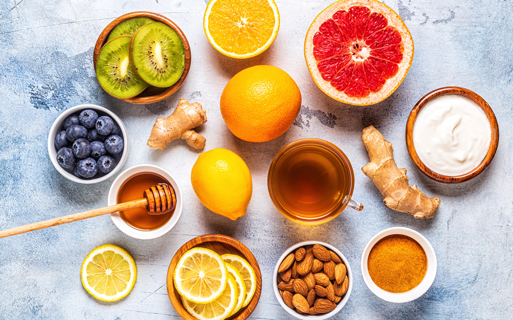

Discussed below are five measures on how to increase immunity against COVID-19:
Take Immunity-Boosting Foods & Vitamins
One may include the following immunity boosting foods for increasing immunity against Coronavirus – immunity boosting vegetables like carrot, spinach, sweet potatoes, cantaloupes, dark leafy greens, tomato, asparagus, and broccoli; and immunity boosting fruits like mango, citrus fruits, and strawberries.
These fruits & vegetables contain vitamins A, C, D, and E, and minerals like magnesium, selenium, and zinc that acts as an immunity boosting vitamins.
All the above foods are also immunity boosters for kids. Special care is required in terms of diet for older people during Coronavirus pandemic as they are prone to catching it faster.
Take Proper 7-8 Hours of Sleep
Sleeping well is one of the easiest ways to increase immunity for COVID-19. A human body naturally repairs and recovers, during sleep, from all the wear and tear. Not sleeping enough not only leaves the body tired and lethargic but also reduces immunity to fight against viruses like COVID-19.
Drink up to 8-10 glasses of water every day
Staying hydrated is the best way to increase immunity to fight Coronavirus because it flushes out all the toxins from the body. Immunity booster drink such as fresh fruit juices and coconut water, along with consuming enough water throughout the day helps in keeping the body hydrated.
Don’t skip these home workout exercises
Home workout exercises are another way of flushing out toxins from the body through sweat. Make sure not to skip exercises while staying home during the pandemic. Depending upon one’s stamina and routine, some of the easy workout exercises that can be done at home may include rope-skipping, push-ups, jogging on the spot, front plank, and forward lunges.
Practice These 3 Steps
Staying indoors can be boring and stressful, and stress affects both the immune system and mental well-being. To build a good mental and emotional health, along with immunity test for covid 19, follow these measures:
- Practice meditation
Meditation is a mindful exercise that relaxes the mind of all external chaos and distractions. A mere 10 minutes of meditation every day can make a big difference not only throughout the day but also in life as a whole. A calm mind helps in better focus, better decisions, and builds a sound body.
- Avoid Smoking and Alcohol
Smoking and other substance abuse weakens the respiratory system, while alcohol reduces the immunity. This makes the body susceptible to catching the virus and being infected.
- Avoid Non-essential travelling
Social distancing is key to fighting novel coronavirus, and hence avoiding non-essential travel will help in protecting oneself and others from the virus.